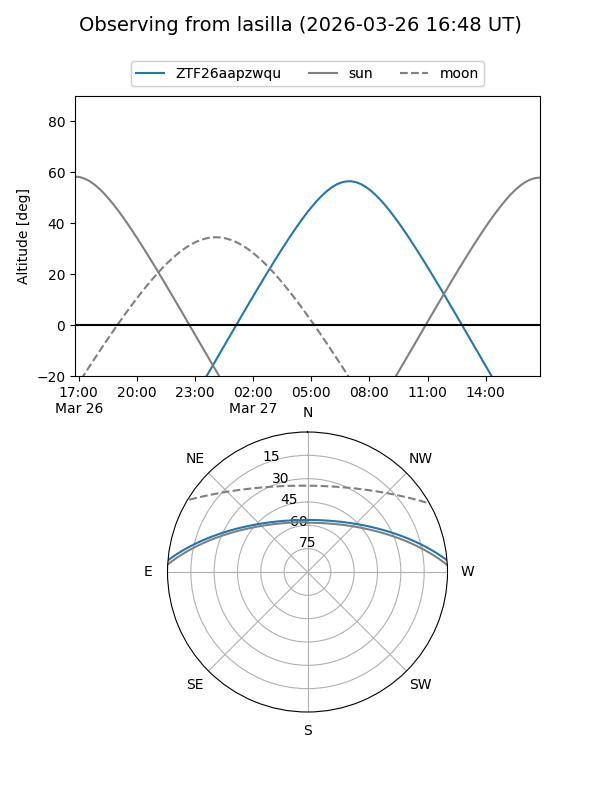
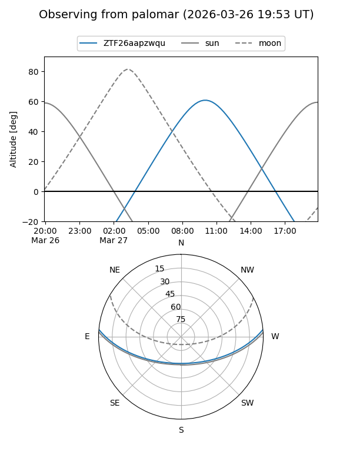

ZTF26aapzwqu
Target ZTF26aapzwqu at 2026-03-26 12:26
Aliases and brokers:
FINK: link
Lasair: link
ALeRCE: link
alt names
ZTF26aapzwqu (ztf,fink_ztf)
Coordinates:
equatorial (ra, dec) = 217.9673,+4.33606
equatorial (HMS+DMS) = 14:31:52.16,+04:20:09.83
galactic (l, b) = (353.7850,+56.93606)
Flags:
Photometry:
last ztfg=19.94
1 ztfg detections
Lightcurve
Visibility


Additional plots